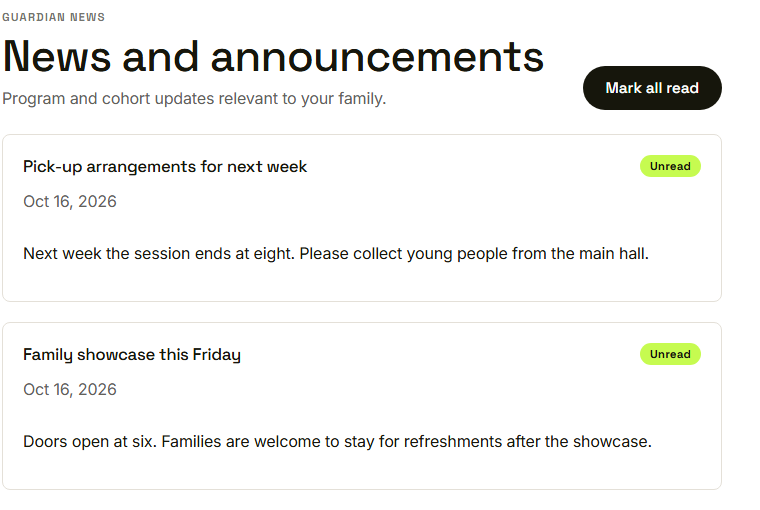
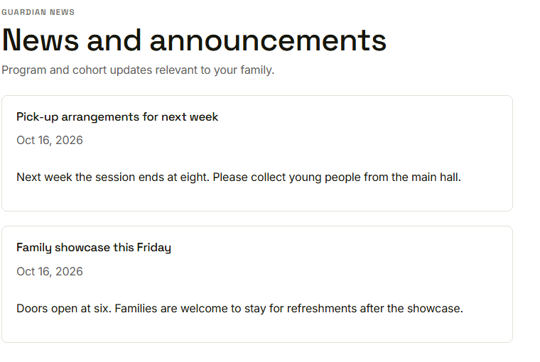

Waypoint · Video 061
Reading announcements
Family news, with unread markers
Two messages for guardians

Unread messages and the Mark all read button
Mark all read

Badges and button are gone
No announcements yet
An empty page explains itself
Things to remember
- Only guardian and cohort news is shown
- Unread messages are marked
- Mark all read clears them for you alone
- An empty page explains itself